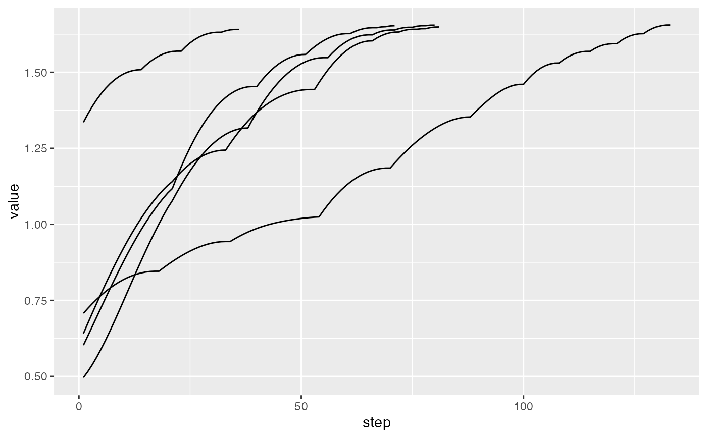

This is a convenience method that returns a data frame summarising the index values for multiple tour paths.
paths_index(bases_list, index_f)
| bases_list | list of histories produced by |
|---|---|
| index_f | index function to apply to each projection |
holes1d <- guided_tour(holes(), 1) # Perform guided tour 5 times, saving results tries <- replicate(5, save_history(flea[, 1:6], holes1d), simplify = FALSE)#> Value 0.789 154.9% better (0.781 away) - NEW BASIS #> Value 0.853 175.5% better (0.781 away) - NEW BASIS #> Value 1.289 51.0% better (0.734 away) - NEW BASIS #> Value 1.318 2.3% better (0.189 away) - NEW BASIS #> Value 1.345 2.0% better (0.177 away) - NEW BASIS #> Value 1.363 1.4% better (0.149 away) - NEW BASIS #> Value 1.365 0.1% better (0.046 away) - NEW BASIS #> Value 1.367 0.1% better (0.038 away) #> Value 1.368 0.2% better (0.057 away) - NEW BASIS #> Value 1.369 0.0% better (0.025 away) #> Value 1.368 0.0% better (0.014 away) #> Value 1.369 0.0% better (0.025 away) #> Value 1.369 0.1% better (0.036 away) #> Value 1.369 0.1% better (0.031 away) #> Value 1.369 0.1% better (0.031 away) #> Value 1.368 0.0% better (0.013 away) #> Value 1.369 0.1% better (0.036 away) #> Value 1.368 0.0% better (0.019 away) #> Value 1.369 0.1% better (0.036 away) #> Value 1.369 0.1% better (0.028 away) #> Value 1.368 0.0% better (0.015 away) #> Value 1.369 0.0% better (0.027 away) #> Value 1.369 0.0% better (0.025 away) #> Value 1.369 0.0% better (0.023 away) #> Value 1.368 0.0% better (0.017 away) #> Value 1.369 0.1% better (0.029 away) #> Value 1.369 0.1% better (0.028 away) #> Value 1.369 0.1% better (0.036 away) #> Value 1.368 0.0% better (0.018 away) #> Value 1.369 0.1% better (0.029 away) #> Value 1.369 0.0% better (0.022 away) #> Value 1.369 0.1% better (0.038 away) #> Value 1.368 0.0% better (0.016 away) #> No better bases found after 25 tries. Giving up. #> Final projection: #> 0.344 0.326 0.396 0.384 0.503 0.466 #> Value 0.869 180.5% better (0.781 away) - NEW BASIS #> Value 0.760 145.3% better (0.781 away) - NEW BASIS #> Value 1.154 51.9% better (0.731 away) - NEW BASIS #> Value 1.244 7.8% better (0.330 away) - NEW BASIS #> Value 1.294 4.1% better (0.247 away) - NEW BASIS #> Value 1.323 2.3% better (0.185 away) - NEW BASIS #> Value 1.352 2.2% better (0.182 away) - NEW BASIS #> Value 1.366 1.0% better (0.128 away) - NEW BASIS #> Value 1.368 0.1% better (0.047 away) - NEW BASIS #> Value 1.369 0.0% better (0.026 away) #> Value 1.369 0.1% better (0.035 away) #> Value 1.369 0.1% better (0.034 away) #> Value 1.369 0.1% better (0.031 away) #> Value 1.369 0.1% better (0.029 away) #> Value 1.369 0.1% better (0.035 away) #> Value 1.369 0.1% better (0.029 away) #> Value 1.369 0.1% better (0.030 away) #> Value 1.369 0.0% better (0.025 away) #> Value 1.369 0.0% better (0.022 away) #> Value 1.369 0.1% better (0.033 away) #> Value 1.369 0.1% better (0.034 away) #> Value 1.369 0.1% better (0.040 away) - NEW BASIS #> Value 1.369 0.0% better (0.007 away) #> Value 1.369 0.0% better (0.004 away) #> Value 1.370 0.0% better (0.008 away) #> Value 1.370 0.0% better (0.008 away) #> Value 1.369 0.0% better (0.006 away) #> Value 1.369 0.0% better (0.005 away) #> Value 1.369 0.0% better (0.005 away) #> Value 1.370 0.0% better (0.007 away) #> Value 1.370 0.0% better (0.008 away) #> Value 1.369 0.0% better (0.006 away) #> Value 1.370 0.0% better (0.009 away) #> Value 1.370 0.0% better (0.007 away) #> Value 1.369 0.0% better (0.003 away) #> Value 1.369 0.0% better (0.005 away) #> Value 1.369 0.0% better (0.004 away) #> Value 1.369 0.0% better (0.003 away) #> Value 1.369 0.0% better (0.005 away) #> Value 1.370 0.0% better (0.007 away) #> Value 1.370 0.0% better (0.006 away) #> Value 1.369 0.0% better (0.007 away) #> Value 1.369 0.0% better (0.004 away) #> Value 1.370 0.0% better (0.007 away) #> Value 1.370 0.0% better (0.008 away) #> Value 1.370 0.0% better (0.006 away) #> No better bases found after 25 tries. Giving up. #> Final projection: #> 0.370 0.338 0.394 0.357 0.498 0.466 #> Value 1.106 257.1% better (0.781 away) - NEW BASIS #> Value 0.691 123.1% better (0.781 away) - NEW BASIS #> Value 1.038 50.2% better (0.699 away) - NEW BASIS #> Value 1.194 15.1% better (0.443 away) - NEW BASIS #> Value 1.303 9.1% better (0.363 away) - NEW BASIS #> Value 1.326 1.8% better (0.164 away) - NEW BASIS #> Value 1.356 2.2% better (0.185 away) - NEW BASIS #> Value 1.359 0.3% better (0.064 away) - NEW BASIS #> Value 1.365 0.4% better (0.082 away) - NEW BASIS #> Value 1.367 0.1% better (0.045 away) - NEW BASIS #> Value 1.368 0.1% better (0.036 away) #> Value 1.368 0.1% better (0.042 away) - NEW BASIS #> Value 1.369 0.0% better (0.025 away) #> Value 1.369 0.0% better (0.019 away) #> Value 1.369 0.1% better (0.028 away) #> Value 1.369 0.0% better (0.025 away) #> Value 1.369 0.1% better (0.032 away) #> Value 1.369 0.0% better (0.017 away) #> Value 1.370 0.1% better (0.036 away) #> Value 1.369 0.0% better (0.020 away) #> Value 1.369 0.1% better (0.032 away) #> Value 1.369 0.1% better (0.033 away) #> Value 1.369 0.0% better (0.022 away) #> Value 1.369 0.0% better (0.019 away) #> Value 1.369 0.0% better (0.020 away) #> Value 1.369 0.1% better (0.029 away) #> Value 1.369 0.1% better (0.033 away) #> Value 1.369 0.0% better (0.028 away) #> Value 1.369 0.0% better (0.015 away) #> Value 1.369 0.0% better (0.026 away) #> Value 1.369 0.1% better (0.030 away) #> Value 1.369 0.0% better (0.012 away) #> Value 1.369 0.1% better (0.030 away) #> Value 1.369 0.0% better (0.015 away) #> Value 1.369 0.1% better (0.034 away) #> Value 1.369 0.0% better (0.026 away) #> No better bases found after 25 tries. Giving up. #> Final projection: #> 0.367 0.354 0.409 0.334 0.483 0.478 #> Value 1.074 246.7% better (0.781 away) - NEW BASIS #> Value 0.868 180.4% better (0.781 away) - NEW BASIS #> Value 0.999 15.0% better (0.427 away) - NEW BASIS #> Value 1.239 24.1% better (0.544 away) - NEW BASIS #> Value 1.285 3.7% better (0.235 away) - NEW BASIS #> Value 1.309 1.9% better (0.170 away) - NEW BASIS #> Value 1.327 1.3% better (0.144 away) - NEW BASIS #> Value 1.358 2.4% better (0.195 away) - NEW BASIS #> Value 1.361 0.2% better (0.061 away) - NEW BASIS #> Value 1.366 0.3% better (0.072 away) - NEW BASIS #> Value 1.368 0.2% better (0.052 away) - NEW BASIS #> Value 1.369 0.1% better (0.032 away) #> Value 1.368 0.0% better (0.016 away) #> Value 1.369 0.0% better (0.025 away) #> Value 1.368 0.0% better (0.019 away) #> Value 1.369 0.1% better (0.034 away) #> Value 1.369 0.1% better (0.034 away) #> Value 1.368 0.0% better (0.019 away) #> Value 1.369 0.1% better (0.029 away) #> Value 1.369 0.1% better (0.030 away) #> Value 1.369 0.1% better (0.037 away) #> Value 1.369 0.1% better (0.035 away) #> Value 1.369 0.1% better (0.034 away) #> Value 1.369 0.1% better (0.031 away) #> Value 1.369 0.1% better (0.029 away) #> Value 1.369 0.1% better (0.030 away) #> Value 1.368 0.0% better (0.018 away) #> Value 1.369 0.1% better (0.033 away) #> Value 1.369 0.1% better (0.028 away) #> Value 1.369 0.0% better (0.029 away) #> Value 1.368 0.0% better (0.015 away) #> Value 1.368 0.0% better (0.023 away) #> Value 1.368 0.0% better (0.023 away) #> Value 1.369 0.1% better (0.031 away) #> Value 1.369 0.1% better (0.031 away) #> No better bases found after 25 tries. Giving up. #> Final projection: #> 0.359 0.354 0.354 0.366 0.514 0.471 #> Value 0.916 195.7% better (0.781 away) - NEW BASIS #> Value 0.414 33.6% better (0.590 away) - NEW BASIS #> Value 0.735 77.5% better (0.781 away) - NEW BASIS #> Value 1.063 44.7% better (0.693 away) - NEW BASIS #> Value 1.275 19.9% better (0.510 away) - NEW BASIS #> Value 1.317 3.3% better (0.224 away) - NEW BASIS #> Value 1.338 1.6% better (0.158 away) - NEW BASIS #> Value 1.354 1.2% better (0.136 away) - NEW BASIS #> Value 1.364 0.7% better (0.110 away) - NEW BASIS #> Value 1.367 0.2% better (0.052 away) - NEW BASIS #> Value 1.368 0.1% better (0.035 away) #> Value 1.368 0.1% better (0.031 away) #> Value 1.367 0.0% better (0.016 away) #> Value 1.368 0.1% better (0.032 away) #> Value 1.367 0.0% better (0.022 away) #> Value 1.368 0.1% better (0.040 away) - NEW BASIS #> Value 1.369 0.0% better (0.021 away) #> Value 1.368 0.0% better (0.016 away) #> Value 1.369 0.1% better (0.034 away) #> Value 1.369 0.0% better (0.022 away) #> Value 1.369 0.0% better (0.020 away) #> Value 1.369 0.0% better (0.024 away) #> Value 1.369 0.1% better (0.039 away) #> Value 1.369 0.0% better (0.024 away) #> Value 1.369 0.1% better (0.036 away) #> Value 1.368 0.0% better (0.019 away) #> Value 1.369 0.1% better (0.037 away) #> Value 1.369 0.1% better (0.038 away) #> Value 1.369 0.1% better (0.035 away) #> Value 1.368 0.0% better (0.018 away) #> Value 1.369 0.1% better (0.034 away) #> Value 1.369 0.0% better (0.024 away) #> Value 1.369 0.1% better (0.035 away) #> Value 1.369 0.0% better (0.026 away) #> Value 1.369 0.0% better (0.025 away) #> Value 1.369 0.1% better (0.036 away) #> Value 1.369 0.0% better (0.026 away) #> Value 1.369 0.1% better (0.038 away) #> Value 1.369 0.1% better (0.039 away) #> Value 1.369 0.1% better (0.037 away) #> No better bases found after 25 tries. Giving up. #> Final projection: #> 0.365 0.322 0.414 0.331 0.506 0.477# Interpolate between target bases itries <- lapply(tries, interpolate) paths <- paths_index(itries, holes()) head(paths)#> try step value improvement #> 1 1 1 0.8532559 0.00000000 #> 2 1 2 0.8957486 0.04249269 #> 3 1 3 0.9365999 0.04085133 #> 4 1 4 0.9756424 0.03904249 #> 5 1 5 1.0127329 0.03709049 #> 6 1 6 1.0477506 0.03501775if (require(ggplot2)) { qplot(step, value, data=paths, group=try, geom="line") qplot(step, improvement, data=paths, group=try, geom="line") }